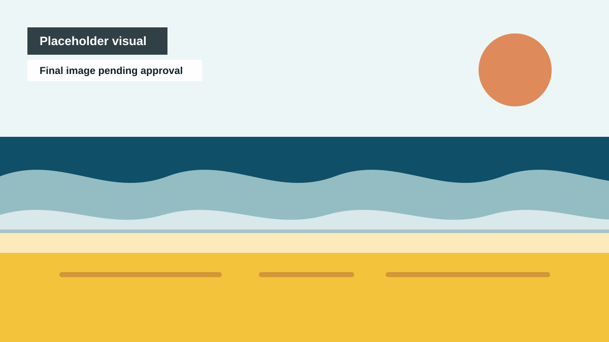

Frankston
Beach, pier, station, schools, libraries, markets, murals, local stories.
Version 1.0 launch platform
Independent proposal by Blue Snake Studio. Not an official Frankston City Council publication.
Frankston as the artwork: public art, schools, libraries, local memory, sister-city exchange, and healthy technology working together to build new creators.
Best first move: trial one print-first Library Creativity Hub or school pack before any wider QR, app, or public-art rollout.

Frankston as the artwork
Frankston 2035 turns public places into creative invitations. A wall can become a lesson. A pier walk can become a noticing trail. A library can become a creativity hub. A school artwork can become a safe scan-and-make pathway.
The point is not to make Frankston look creative. The point is to help Frankston become more creative, one small useful pilot at a time.
How the system works
Beach, pier, station, schools, libraries, markets, murals, local stories.
Small walls, QR trails, school displays, library packs, market activations.
QR links, print packs, short prompts, clear endings, no child data by default.
Children, families, artists, teachers, librarians, community workers.
People sketch, write, sing, notice, repair, reply, and contribute.
The ecosystem becomes the public artwork.
Launch pathways
This V1 site is built to help council, teachers, artists, families, media, and funders find the right door quickly.
See the first pilot options, risks, safeguards, and modest Stage One ask.
View pilotsOpen teacher-friendly language, lesson pack pathways, and safe technology rules.
Open schools pageGet a short summary, credits, contact details, and launch-safe language.
Open media pageStrong call to action
The recommended first public test is a library or school-friendly creative pack because it can work without collecting child data, without final QR codes, and without pretending a whole program already exists.